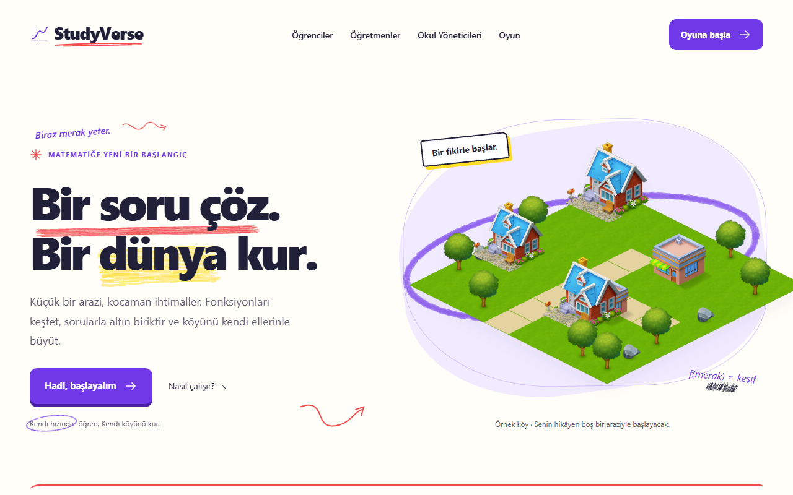
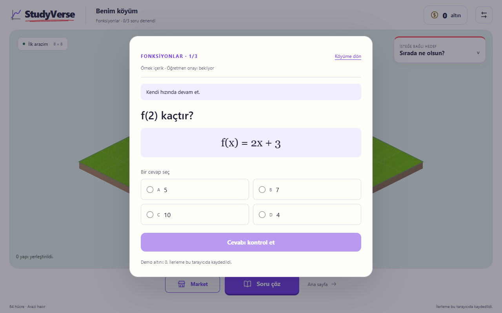

StudyVerse
Web tabanlı eğitsel oyun
StudyVerse, lise düzeyinde fonksiyon sorularını izometrik köy geliştirmeyle birleştiren web tabanlı bir oyun prototipi. Doğru cevaplarla altın kazanırsın. Marketten aldığın yapıları arazine yerleştirerek köyünü büyütürsün.
- Geliştirme durumu
- Oynanabilir prototip · Geliştirme aşamasında
- Teknolojiler
- Projedeki rolüm
- Görsel tasarımı, arayüz kararlarını, proje koordinasyonunu ve manuel testleri yürütüyorum. Teknik geliştirme yapay zekâ desteğiyle ilerliyor.
Prototipte çalışanlar
- Demo sorusu, pekiştirme ve altın ödülü akışı çalışıyor. Demo soruları öğretmen onayını bekliyor.
- Marketten yapı alma, köye yerleştirme ve ilerlemeyi tarayıcıda yerel olarak kaydetme çalışıyor.
Geliştirme sürüyor
- Giriş ve öğretmen paneli üzerindeki çalışma sürüyor. Hesaba bağlı köy kaydı, bulut kayıtları, görev atama, aşamalar ve raporlama henüz tamamlanmadı.
Mobil tanıtım sitesi önizlemesi
- Aşağıdaki 26 saniyelik kayıt, StudyVerse tanıtım sitesinin mobil görünümünü gösterir. Oyun ekranları galeride yer alıyor.
Proje medyası




